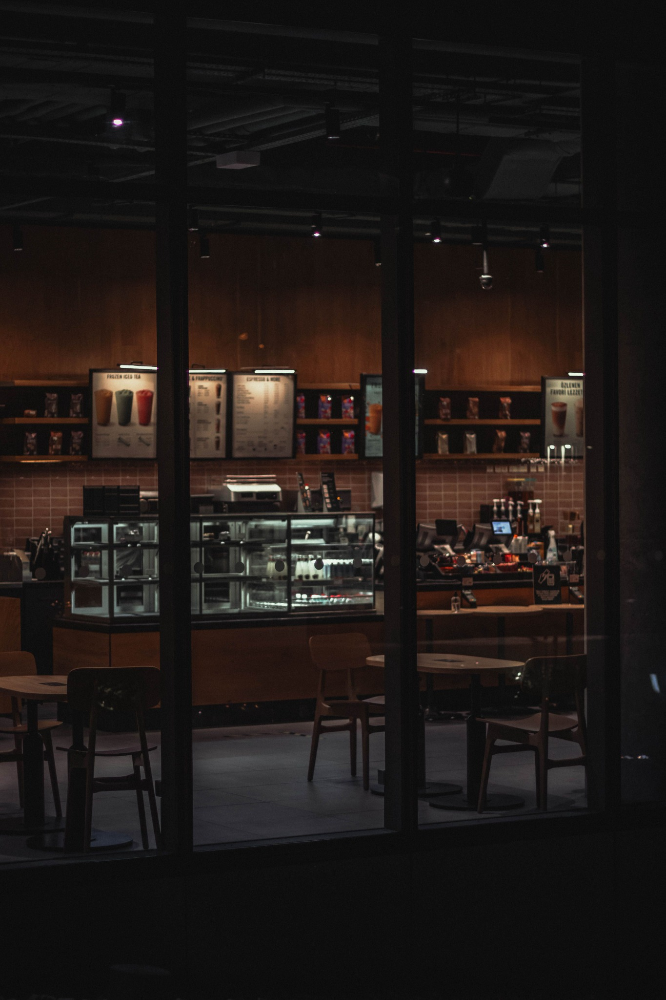

Our story
About Oak & Bean Coffee
Oak & Bean Coffee is a proposed neighbourhood café focused on quality coffee, fresh café food and a warm environment where customers can meet, work or socialise.

Our Story
The idea behind Oak & Bean Coffee is simple: create a café that feels dependable and welcoming. Instead of trying to offer everything, the business focuses on a thoughtful menu, friendly service and a comfortable atmosphere.
The name combines the strength and warmth associated with an oak tree with the coffee bean at the heart of the café experience.
Mission
To provide quality coffee, fresh food and friendly service in a relaxed neighbourhood environment.
Vision
To become a trusted local café known for consistency, community and a comfortable customer experience.
Inside Oak & Bean